Búsqueda documental
Busca por nombre de archivo, guía de despacho, SIDREP, patente o RUT, con filtros por tipo de documento, origen y rango de fechas.
Portal de documentos y cumplimiento para clientes y ejecutivos: documentación indexada por empresa, solicitudes de análisis y tratamiento en línea, dashboards por rol, SSO y auditoría completa.
portal.certidesk.cl/loginParte de IntegralFlex Suites
DocumentDesk es el portal documental de la suite: cada cliente accede con su cuenta y ve solamente los documentos de su empresa, indexados por RUT y sincronizados con el repositorio. La descarga masiva permite bajar lotes completos con su índice, y las solicitudes de análisis, muestreo y tratamiento se ingresan directamente desde el portal, quedando registradas para el equipo interno.
Para la operación interna ofrece dashboards diferenciados por rol —administración, ejecutivos y báscula—, gestión de empresas y usuarios con perfiles, registro de auditoría con visor y descarga de logs, y acceso unificado SSO con el resto de la suite IntegralFlex.
Busca por nombre de archivo, guía de despacho, SIDREP, patente o RUT, con filtros por tipo de documento, origen y rango de fechas.
Certificados de disposición final y documentos generales organizados por RUT, con contador de documentos por repositorio.
Extrae el texto de los PDF y muestra transportista, patente, guía de despacho, SIDREP y guía de pesaje de cada documento.
Selecciona documentos y los descarga en un solo archivo ZIP para auditorías o licitaciones.
El ejecutivo carga certificados, guías, notas de venta, SIDREP, resoluciones, informes, contratos y formularios en la carpeta del cliente.
Recibe automáticamente las guías de pesaje desde la báscula y controla los envíos pendientes y los errores.
Usuarios activos, documentos indexados, metadata de PDF, riesgo de acceso, actividad de 7 días y clientes con mayor uso.
Mantenedor de clientes y usuarios con roles cliente, ejecutivo y administrador, alertas de clientes sin correo o sin ejecutivo.
Registro de logins, intentos fallidos, descargas y visualizaciones con actor, detalle e IP, filtrable por fecha y evento.
Cada usuario entra con su RUT y contraseña y ve exactamente lo que su rol permite.
Ve solo sus documentos: certificados de disposición final, guías de pesaje, notas de venta, SIDREP, resoluciones e informes. Busca, filtra por tipo y fecha, descarga uno a uno o en ZIP y actualiza sus datos de contacto.
Atiende a su cartera de clientes: busca en todo el índice documental por cliente, RUT, archivo, patente o SIDREP, abre la gestión documental de cada cliente y carga o reemplaza documentos por tipo.
Controla la plataforma: dashboard de uso e indexación, gestión de empresas, mantenedor de usuarios y roles, integración con la báscula y auditoría completa de accesos y descargas.
Pantallas reales del sistema. Los nombres de clientes, RUT, direcciones, contactos, patentes, números de documentos e IP fueron reemplazados por datos ficticios.
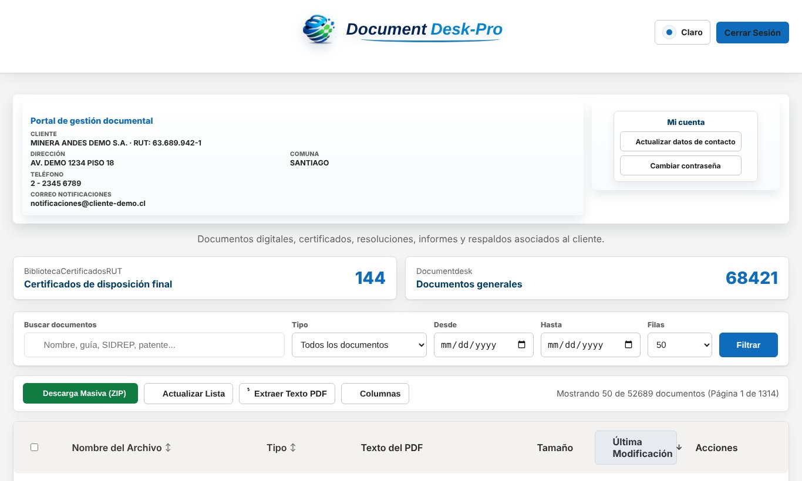
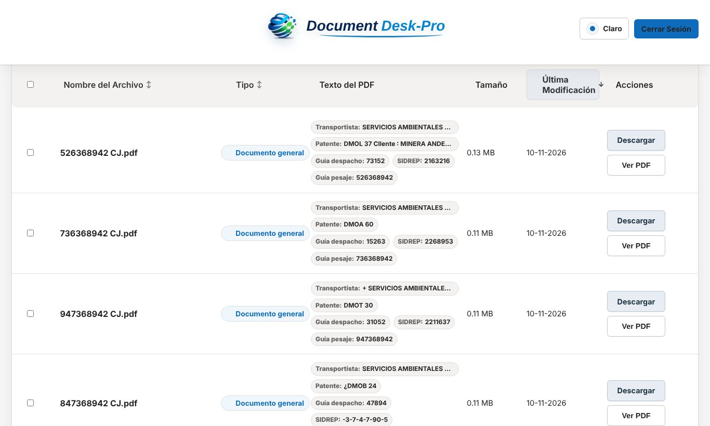
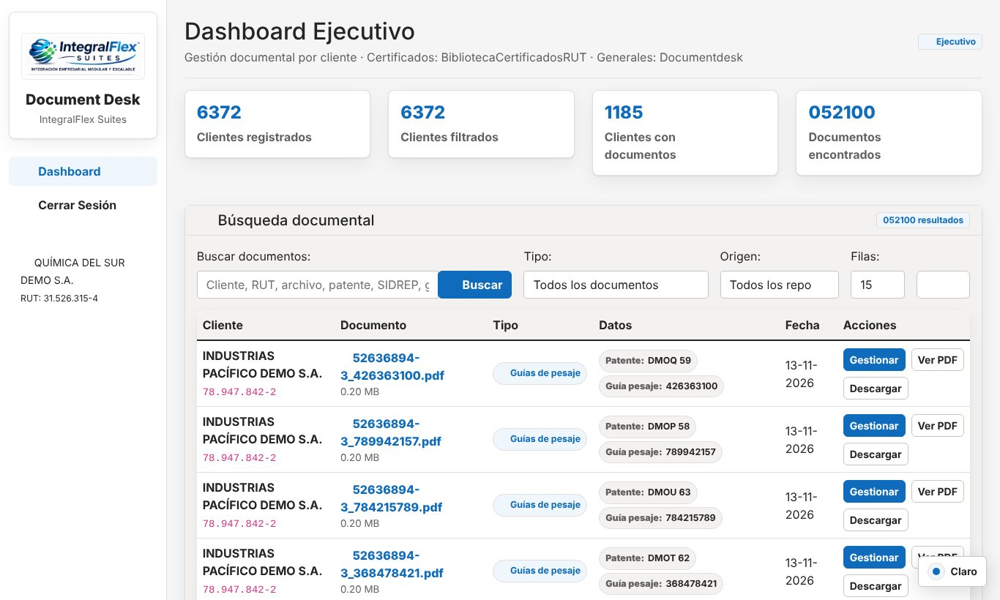
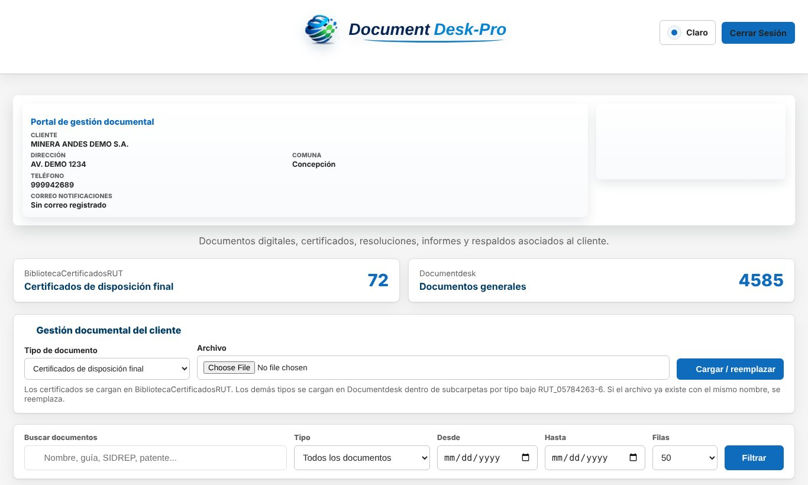
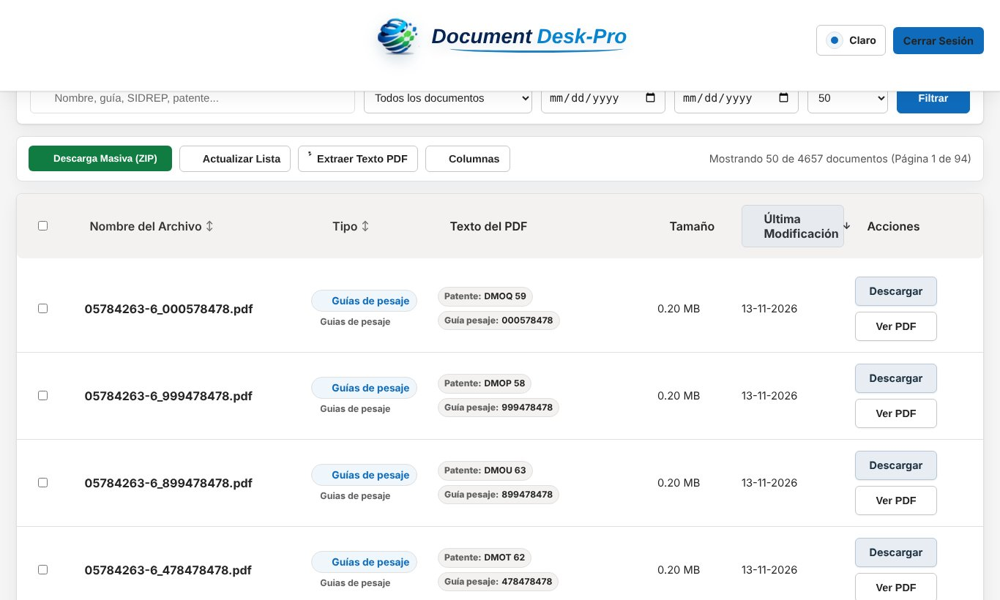
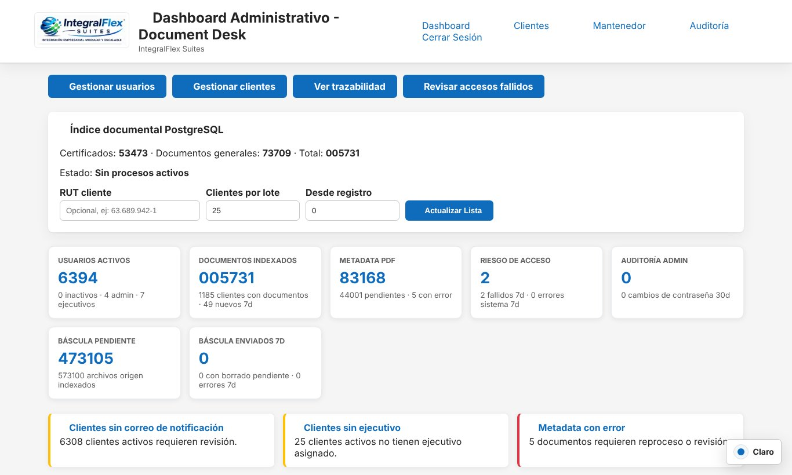
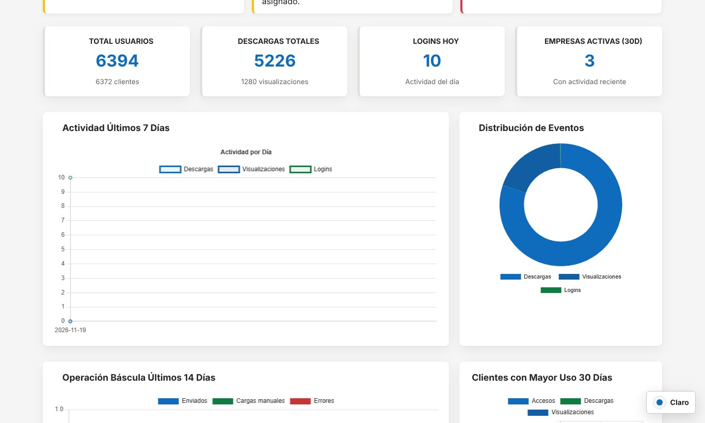
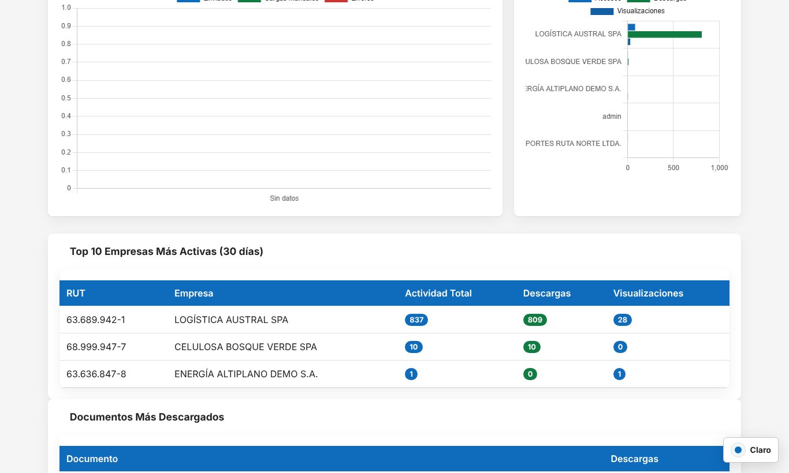
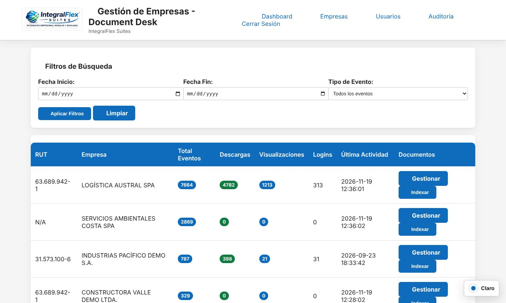
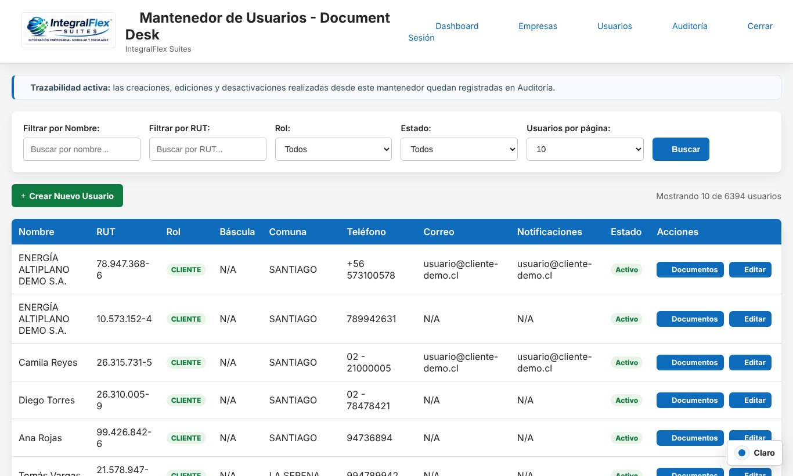
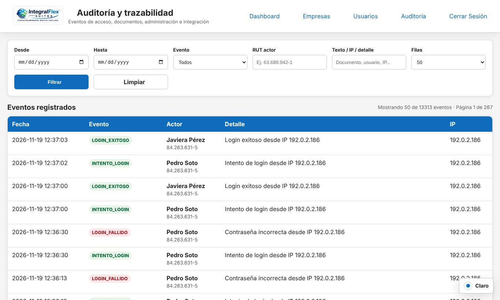
Documentos indexados por cliente y empresa.
Cada cliente ve solo lo suyo, con acceso SSO.
Solicitudes de análisis y tratamiento en línea.
Logs de accesos, eventos y descargas.
Flask + PostgreSQL
SSO con la suite, portal público en certidesk.cl
Gunicorn (socket) + Nginx en portal.certidesk.cl
Perfiles por rol, auditoría y logs descargables
Desde USD 6,9 por usuario al mes según el tamaño de tu equipo. Cotiza en línea o escríbenos y coordinamos una demo con tus datos.